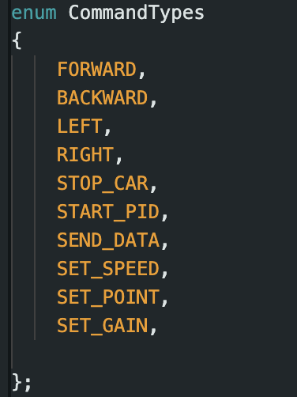
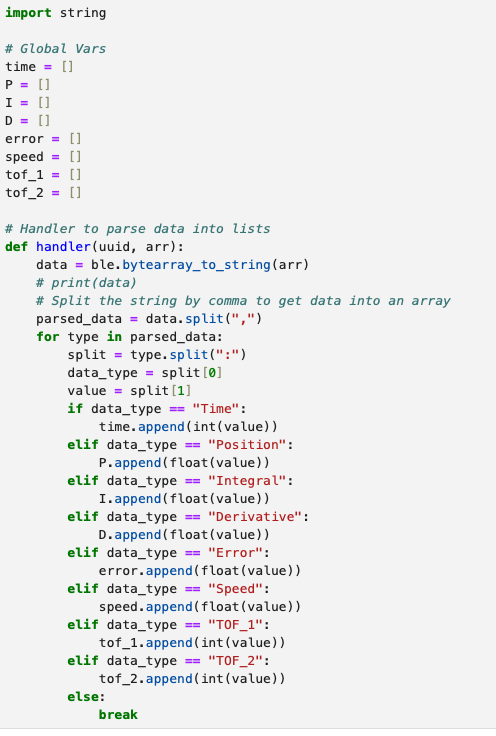
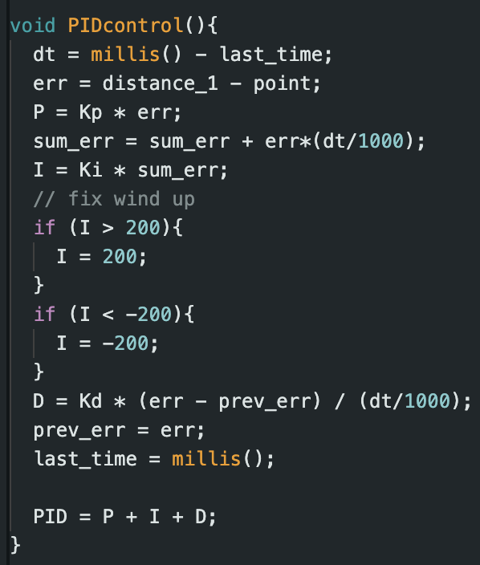
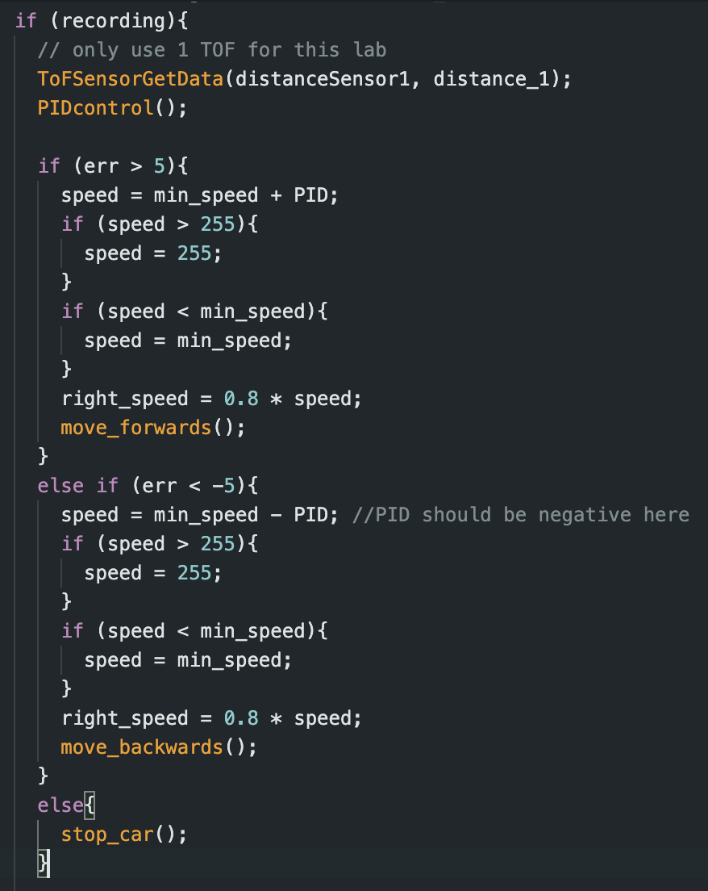
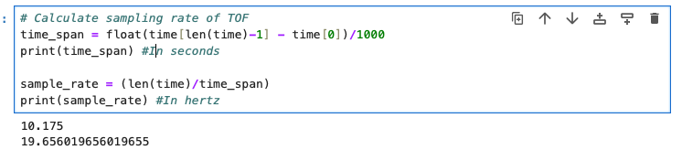
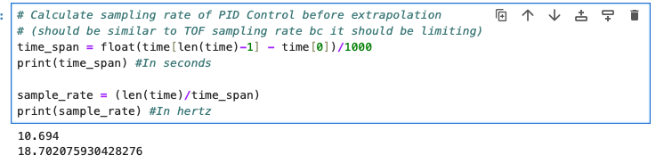
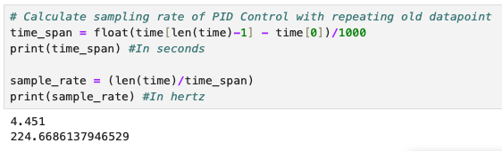
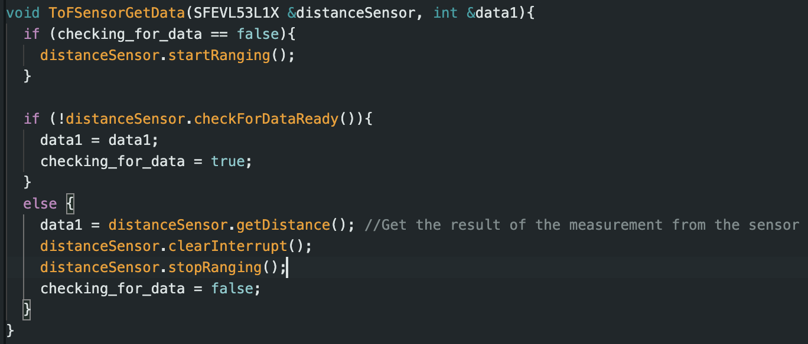
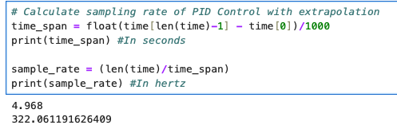
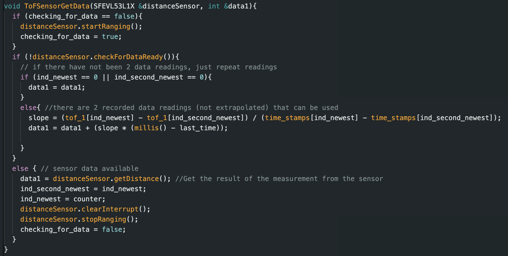

The goal of this lab is to start closed loop control. We were tasked with implementing a P, PI, PID, or PD controller to drive the RC car up to a wall and stop 1ft (or 304mm) in front of the wall. We also had to account for overshooting.
The goal of the prelab was to setup debugging for the PID controller and have a basic PID controller implemented. For this lab, we had to implement new commands for communication between the computer and the RC car. The first 5 commands were to move the car for future use and the last 5 were to set PID parameters, start the process, and send the data over:
Then, we updated the python handler to populate arrays with the new sensor data and PID data:
The final point of note was that we wanted the car to stop even when a bluetooth connection dropped. We set it up so that the PID process starts by setting the "recording" variable to true. We made it so that after ~5 seconds, the "recording" variable is set to false and the car is stopped.
The PID controller was implemented in Arudino below. The 3 parameters we set are the proportional gain(Kp), the integral gain(Ki), and the derivative gain(Kd). The positional error (err) is defined as the difference between current ToF reading and the setpoint. Sum_err was used in the integral term and it summed up the proportional error over time. The derivative portion was simply the rate of change between the previous two errors.
To find our values of Kp, Ki, and Kd, we started each at 0.0 and slowly increased them. The values were found experimentally based on stability of the car. We found Kp = 0.2, Ki = 0.0, Kd = 0.2. This was on the tile in my home, so it may need to be recalibrated at each location. We could develop more robust algorithms to floor material. Ki was 0.0 because any non-zero value made the car uncontrollable even when trying to account for wind up, so this is a PD controller. We controll the car by adding or subtracting the PID value from the min_speed and bound the value based on our motor range as well:
Our motors have an input range of roughly 55 to 255. The TOF sensor on short distance mode has a range of about 0 to 1300mm. If we assume are only creating a P controller, we can create a bound on the proportional gain based on the bound of the error. Since our set point is 304mm, the bounds of our error are -304 to 996mm. Assuming we standardize our P to 0 to 200 (by setting a min_speed input of 55 to our motors), we get a proportional gain range of -0.66 to 0.2. Since we are bounding our speed, the gain value ranges aren't too influential, so we chose to pick the values experimentally as stated before.
We conducted our tests with the short mode of the ToF sensor, but the long distance mode should function similarly with a slight decrease in accuracy. We will test this in the future in a larger area. For the sampling time of our control loop, we found that the ToF sensor was the limiting factor.
 We solved this by changing how we use the ToF readings
We started by running the control loop and having the PID control run even when the ToF sensor was not ready. The first solution was to simple continue using the old reading until a new one arrived. This produced major overshooting because the control loop was so much faster than the ToF sensor. It would use old readings even though it has gotten much closer or much further way. The code snippet and new control loop frequency is below:
 The second solution was to do extrapolation where we take the last 2 ToF readings to find a slope and use the elapsed time to estimate the current distance. This gave us the expected control behavior at a higher control loop frequency. The code snippet and control loop frequency are below:
 Below are the 3 trials of the RC car completing the task along with graphs of the error and speed vs. time for each. These stunts were recorded once the extrapolation was completed. We see that the bounding of the speed was necessary as it spiked below and above the min and max values. In general, the task was completed with overshooting, but there was little occilation when correcting.